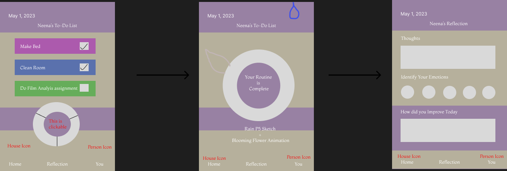

My Project is a to-do list, the more things you check off, the more your flower grows. If you check off all of your items, your flower blooms. I included a journal prompt page, as I think the two go hand in hand. I believe this is what will separate my app from others.
ABOUT
Wireframe & Design Strategy
I wanted a simple design with lots of pastel colors, just my personal preference. I wanted to add in lots of congragulatory imagery to hopefully keep the user attentive to the circle compelting, eventually making the flower bloom. I have a very visual design element so hopefully users will love when they can see their results.
For the journal section, I wanted to keep the pastel color theme and leave space for the user to journal and write out their thoughts or feelings. I also have an account page where you can access your old entries and explore your growth, how many times you completed your to-do's and routine.
Functions
Colors
I will use this color palette
Completing the Circle
Everytime you click off a task, I want the circle to show more complete. I used these articles to figure out how:
Blooming Animation
Articles:
Jounral Entry Data
To figure out how to use the journal data to create entries - I used these articles: